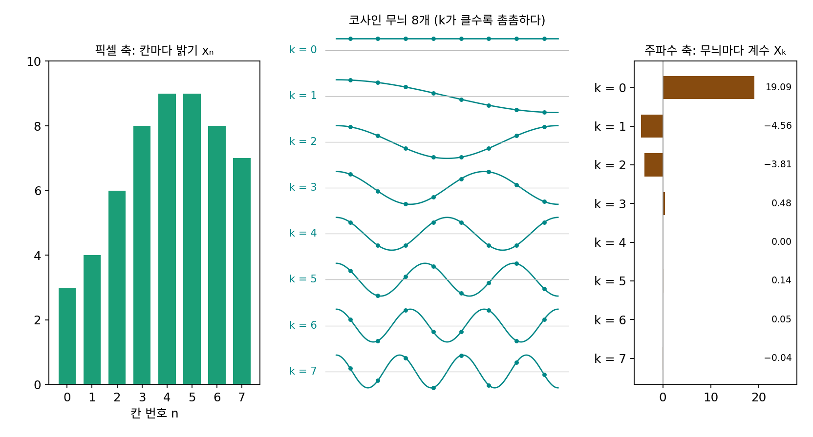
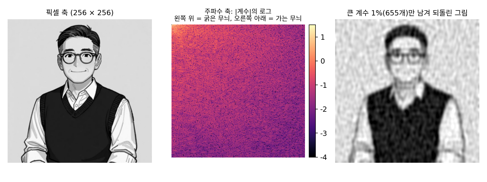
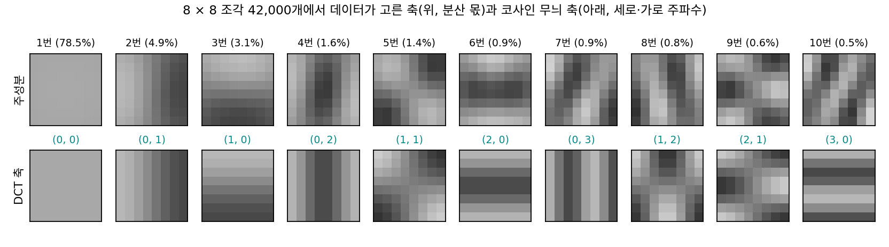

푸리에 변환: 같은 그림을 무늬의 축으로 다시 적기
블러는 무딘 칼이었다. 무늬를 굵기에 따라 서서히 줄이니, 가운데 굵기의 무늬는 흐린 그림과 결 그림에 반씩 걸친다. 무늬 하나하나를 1배 아니면 0배로 자르려면, 그림을 처음부터 「이 굵기의 무늬가 얼마, 저 굵기의 무늬가 얼마」로 적어 두어야 한다. 그렇게 적어도 그림의 정보가 하나도 빠지지 않을까?
역사: 열이 퍼지는 법칙에서 사진 압축까지
푸리에(Joseph Fourier)는 고체 속으로 열이 퍼지는 법칙을 풀다가, 처음 온도 분포가 어떤 모양이든 코사인과 사인 물결의 합으로 쓸 수 있다고 주장했다. 1807년 12월 파리 학사원에서 읽힌 논문이다. 심사를 맡은 라그랑주(Joseph-Louis Lagrange)와 라플라스(Pierre-Simon Laplace)는 아무 함수나 삼각함수의 급수로 펼칠 수 있다는 주장을 받아들이지 않았고, 논문은 엄밀하지 않다는 이유로 오래 출판되지 못했다. 푸리에는 1822년 『열의 해석적 이론』으로 이 생각을 펴냈다.
150년 뒤 이 생각은 사진을 줄이는 일에 쓰였다. 아메드(Nasir Ahmed)는 1972년 초 「코사인 변환」을 연구하겠다는 제안서를 미국 국립과학재단에 냈다가 떨어졌다. 그가 회고하기로 심사평 하나는 생각이 「너무 단순하다」는 것이었다. 그는 제자 나타라잔(T. Natarajan), 동료 라오(K. R. Rao)와 연구를 이어 1974년 「이산 코사인 변환」을 발표했다. 1992년에 정해진 사진 압축 표준 JPEG 은 그림을 8 × 8 칸 조각으로 나눠 조각마다 이 변환을 쓴다. 표준이 보기로 실은 밝기용 양자화 표는 가장 굵은 무늬의 계수를 16 간격으로, 가장 가는 무늬의 계수를 99 간격으로 반올림한다. 가는 무늬일수록 덜 자세히 저장한다.
8칸짜리 줄 하나를 코사인 여덟 개로
JPEG 이 한 번에 다루는 조각의 한 줄과 같은 8칸 줄로 시작한다. 밝기가 3, 4, 6, 8, 9, 9, 8, 7 이다. 칸 위에 촘촘함이 다른 코사인 무늬 여덟 개를 깔고(아래 그림 가운데), 무늬마다 얼마씩 곱해 더하면 이 줄이 되는지 구한다. 답은 19.09, −4.56, −3.81, 0.48, 0.00, 0.14, 0.05, −0.04 다. 첫 수는 한결같은 무늬(평균 밝기)의 몫이고, 뒤로 갈수록 촘촘한 무늬의 몫이다. 첫 세 수만 남기고 나머지를 0으로 두어도 되살린 줄은 칸마다 0.26 안쪽으로 맞는다.

계수 Xk는 거꾸로, 칸마다 그 무늬의 코사인 값을 곱해 더하면 구해진다. 칸 N개가 계수 N개로 바뀌고 다시 칸 N개로 돌아오니 정보는 하나도 빠지지 않는다. 밝기의 제곱합도 같다. 칸 쪽 3² + 4² + … + 7² 이 400이고, 계수 쪽 19.09² + (−4.56)² + … 도 400이다. 이렇게 같은 그림을 칸마다의 밝기 대신 무늬마다의 계수로 다시 적는 일을 푸리에 변환 (그림을 무늬마다의 계수로 다시 적기 / Fourier transform)이라 한다. 여기서 쓴 코사인만의 꼴은 이산 코사인 변환(DCT, discrete cosine transform)이다.
2차원 그림은 가로 무늬와 세로 무늬를 곱한 바둑판 물결로 같은 일을 한다. 선생님 그림의 수 65,536개는 계수 65,536개가 되고, 되돌린 그림은 칸마다 10⁻¹⁵ 안쪽으로 원래와 같다. 그런데 축을 바꾸자 세기가 몇 안 되는 계수에 몰린다. 크기가 큰 계수 1%(655개)가 세기의 90.0%를 가진다. 픽셀 축에서 밝기 차가 큰 칸 1%는 세기의 3.6%만 가진다.

ML에서: 축을 데이터에서 배우면
코사인 축은 사람이 정해 준 축이다. 데이터가 축을 직접 고르게 할 수도 있다. 분산이 큰 방향부터 차례로 서로 직교하는 축을 고르는 주성분 분석이 그것이고, 제곱 오차로 배우는 활성화 없는 오토인코더도 그 축들이 펼치는 공간을 배운다(발디·호르닉, 1989). 아메드가 처음 찾던 것도 사실 이 축이었다. 당시 제곱 오차로 가장 좋은 축(카루넨–뢰브 변환. 주성분 축과 같다)은 알려져 있었지만 빨리 계산할 방법이 없어서, 그와 닮았으면서 빨리 계산되는 축을 찾다가 코사인에 닿았다. 둘이 얼마나 닮았는지는 문제 6에서 잰다.
문제 4. 화음 녹음 파일
도·미·솔을 262, 330, 392 Hz 로 동시에 1초 동안 울린 소리를 1초에 8,000번 기록했다. (가) 이 녹음은 시간 축으로 적으면 수 몇 개인가? 이퀄라이저 화면처럼 주파수 축으로 적으면 크기가 0이 아닌 칸은 몇 개인가? (나) 「도」 소리만 절반으로 줄이려면 두 축에서 각각 수 몇 개를 바꿔야 하는가?

시간 축으로는 8,000개죠. 주파수 축으로 바꿔서 크기가 0.05 넘는 칸을 세니까 4,001칸 가운데 3칸이에요. 262, 330, 392 Hz.

그럼 8,000개의 수가 3개로 줄어든 건가요?

0인 칸도 「여기는 0」이라는 정보니까 수의 개수는 그대로야. 0이 아닌 칸이 셋뿐이라 적어 두기가 쉬워진 거지.
(나)는 시간 축에서는 도 소리가 모든 순간에 섞여 있으니 8,000개를 거의 다 바꿔야 하고, 주파수 축에서는 262 Hz 칸 하나만 반으로 하면 돼요.

이퀄라이저의 저음 손잡이가 주파수 축에서 일하는 거였네요. 그림의 블러도 가는 무늬 쪽 칸들을 줄이는 손잡이고요.
문제 5. 한 칸만 밝은 줄
8칸 줄 세 개의 DCT 계수를 구하라. (가) 모든 칸이 5인 줄 (나) +1, −1 이 번갈아 놓인 줄 (다) 넷째 칸만 1이고 나머지가 0인 줄. 각 줄에서 세기(계수의 제곱)는 몇 개의 계수에 몰리는가?

(가)는 k = 0 무늬가 한결같은 줄이니까 그 무늬 하나뿐이야. X₀ = 5 × √8 = 14.14.
(나)는 가장 촘촘한 k = 7 무늬랑 똑같아 보이니까 X₇ 하나겠죠. …돌려 보니 X₇ 몫이 82.1%이고, X₅·X₃·X₁에도 10.1%, 4.5%, 3.2%가 있어요.
k = 7 무늬를 위 그림에서 다시 봐요. 칸 위의 점들이 +1, −1 을 똑같은 높이로 번갈아 찍나요?

아, 점의 높이가 칸마다 달라요. 코사인 무늬는 칸 가운데에서 값을 읽으니까 완전히 번갈아 뛰는 줄과는 조금 다르고, 그 차이를 다른 홀수 무늬들이 메운 거네요.

(다)는요?

여덟 계수에 다 퍼져 있어요. 가장 큰 몫이 24%예요. 픽셀 축에서 한 칸에 몰린 것이 주파수 축에서는 전부에 흩어지네요.

거꾸로 주파수 축에서 하나에 몰린 (가)는 픽셀 축에서 여덟 칸 모두에 퍼져 있었어요. 한 축에서 몰린 것은 다른 축에서 퍼지는구나.

그래요. 그래서 두 축은 서로를 대신하지 못해요. 날카로운 점 하나, 가는 선 하나는 주파수 축에서 비싸요.
조원 한 명의 일정만 바꾸면 되는 걸 조 전체 시간표로 다시 짜면 모든 칸이 조금씩 바뀌는 거랑 같네요.
문제 6. 데이터가 고른 축
등장인물 그림 70장에서 8 × 8 조각 42,000개를 뽑아, 조각 하나(수 64개)를 요약하는 축을 주성분 분석으로 데이터에서 골랐다. (가) 분산이 가장 큰 첫 축은 어떤 무늬이고, 분산의 몇 %를 가지는가? (나) 둘째부터 여섯째 축은 DCT 의 코사인 무늬 축과 얼마나 닮았는가(두 축 사이 코사인의 크기)? (다) JPEG 은 그림마다 축을 새로 찾지 않고 고정된 DCT 축을 쓴다. 왜 그래도 괜찮은가?
그림마다 머리카락이든 안경이든 다 다르니까, 데이터가 고른 축은 알아보기 힘든 모양일 것 같아요.
돌려 봐요.

첫 축은 64칸이 모두 같은 밝기인 무늬예요. 분산의 78.5%고, DCT 의 (0, 0) 축과 코사인이 1.000이에요. 둘째는 가로로 한 번 기우는 무늬로 (0, 1) 축과 0.995, 셋째는 세로로 기우는 무늬로 (1, 0) 축과 0.991이에요. 넷째부터 여섯째도 0.950, 0.952, 0.965예요. 생각보다 너무 닮았는데요.

데이터는 코사인이 무엇인지 몰랐어요. 그런데 왜 코사인이 나왔을까요?
조각을 그림의 어느 자리에서 뽑든 통계가 비슷하다면, 두 칸이 얼마나 함께 움직이는지는 두 칸 사이의 거리만으로 정해져요. 그런 공분산 행렬의 고유벡터는 물결무늬에 가까워요. 선형대수에서 원형으로 도는 행렬은 푸리에 행렬이 대각화한다고 배웠어요.
그래요. 이 데이터를 DCT 축으로 재면 축끼리 남는 공분산이 0.12%뿐이에요. 거의 주성분 축 그대로라는 뜻이죠.
(다)는 그거네요. 고정된 코사인 축이 데이터 축과 거의 같으니까, 그림마다 축을 찾아 함께 저장할 필요가 없어요. 그리고 제곱 오차로 배우는 오토인코더가 처음 배우는 것도 결국 이 물결무늬 축이고요.
조교님이 학생마다 채점 기준을 새로 만들지 않고 공통 기준표 하나로 채점해도 거의 공정한 거랑 같네요.